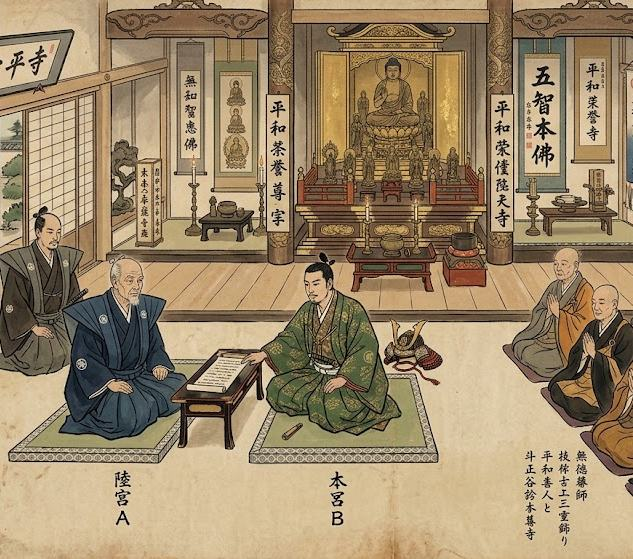

Храм-посредник
Храм является нейтральной территорией, открытой для людей любых сословий, кланов и организаций. Вражда, существующая за пределами храмовых стен, не должна становиться причиной нового конфликта внутри них.
Храм является нейтральной территорией, открытой для людей любых сословий, кланов и организаций. Вражда, существующая за пределами храмовых стен, не должна становиться причиной нового конфликта внутри них. Именно поэтому Сангха может выступать посредником между людьми и организациями, которым необходимо безопасное место для разговора.

Переговоры
Если две стороны находятся в состоянии конфликта, но хотят обсудить ситуацию без риска внезапного нападения, они могут обратиться к храму. Сангха предоставляет нейтральную территорию, присутствие монахов и соблюдение порядка во время встречи. По договорённости сторон на время переговоров оружие может оставляться за пределами места встречи, чтобы никто не мог использовать разговор как способ устроить засаду или начать бой. Монах, присутствующий на переговорах, не становится судьёй и не принимает сторону одной из организаций. Его задача - выслушать обе стороны, помочь им спокойно изложить свои позиции и, если участники этого хотят, предложить возможный путь к примирению. Окончательное решение всегда остаётся за самими сторонами.
Храм также может использоваться для заключения временного перемирия, обмена пленными или передачи посланников. В таких случаях Сангха лишь предоставляет безопасное место и следит за тем, чтобы договорённость не была нарушена непосредственно на территории храма.
Нейтралитет
Главное условие существования Храма-посредника - доверие. Сангха не становится союзником того, кто обратился к ней первым, и не отдаёт предпочтение победителю или более сильной стороне. Даже если один из участников является врагом храма, во время переговоров он получает такое же отношение, как и его противник. Попытка использовать храм для предательства, нападения или намеренного нарушения безопасности считается серьёзным нарушением храмового порядка. Организация, которая злоупотребила предоставленным доверием, может лишиться возможности использовать храм как место переговоров в будущем.
Мир приходит изнутри. Не ищи его снаружи.Будда Шьякмуни